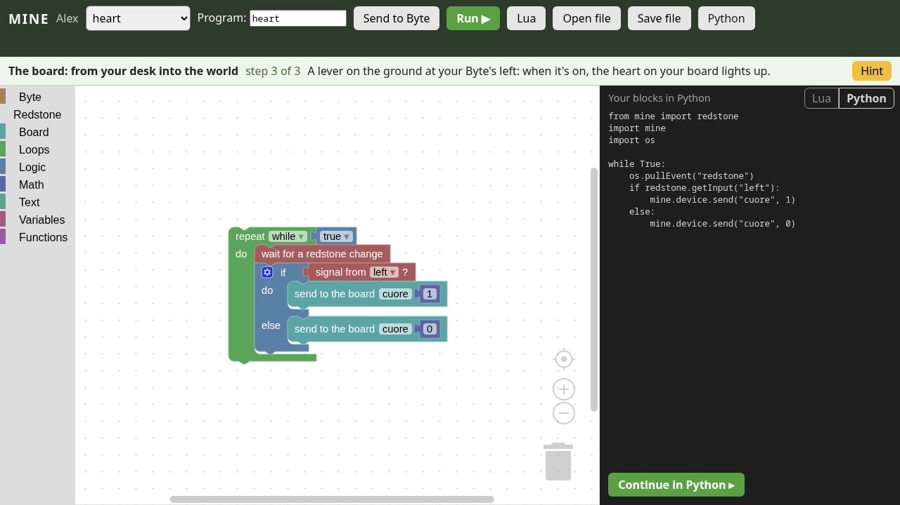
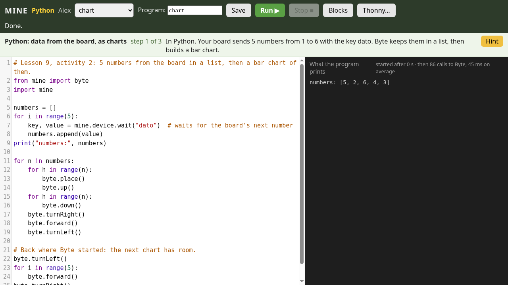

MINE
Mine Is Not Education
Minecraft at school, on Linux too. Free, open source, made by people who teach.
Every student has Byte, a robot they program with blocks, Lua and Python. The server checks the lessons, the micro:bit opens doors in the world, and the school keeps everything on its own server.
New · v0.1.0, October 2026 — sixteen lessons, from the maze to secret messages; Byte in Python, in the editor and in Thonny; micro:bit, Arduino and the Raspberry Pi Pico 2 W over Wi-Fi. What's new

Features
Minecraft Education's teaching tools, made again for Minecraft Java: the school uses them on its own PCs, Linux too, with its own server.
For teachers
Lessons that check themselves
Sixteen lessons ready, with a teacher's guide. The server looks at what Byte really did and tells the student what's missing, with new challenges at every try.
The class joins with four symbols
No names to type: students click the class code on the projector and land in their lane of the lab.
Class worlds and protected zones
A world for each class, zones to save and put back as they were with a command, zones no student can break.
Characters, boards and quizzes
Ada and the other NPCs talk and ask questions: they're written in a book, without coding. The answers download as a spreadsheet.
Portfolio and galleries
The in-game camera, the teacher's notes, class galleries, an export as web pages.
The server in one command
An installer for Linux: a service, nightly backups, firewall. An old PC is enough.
For students
Byte, your robot
It walks, builds, digs, feels redstone. A byte is a block of 8 bits: Byte works with the blocks of the world.
Blocks, Lua, Python
Start with blocks in the browser, see the Lua and the Python they make, go on by hand. The same names in every language:
byte.forward().Real Python
In the browser's editor or in Thonny on the PC, with errors explained and the line highlighted.
micro:bit, Arduino, Pico
The board's button opens a door in the game, a lever in the game lights the heart on the board. On a cable, or the Pico 2 W over Wi-Fi; even without code, with two blocks.
Hints when you need them
One at a time, in the words of blocks, Lua or Python.
For makers
Lessons as files
A lesson is a JSON file: goals, hints, checks, items to give. Written without touching the code, translated, shared.
Free software
Apache 2.0 license. Built on Fabric and CC: Tweaked, with Blockly, MicroPython and CodeMirror.
Tested at every change
Over a hundred tests run in the game at every change, including the lessons' solutions in Lua, blocks and Python.
A community to build
Teachers, developers, technicians, translators: MINE is just starting and needs everyone.
Gallery



Lessons
One hour each, with a lesson plan, solutions and common problems. For ages 10–14 in Lua or with blocks; for older students in Python, with a micro:bit, an Arduino or a Pico 2 W.
- 1First steps with Byteinstruction, sequence, program
- 2Loops: rows, floors and cubesnested loops, area and volume
- 3Debugging: fix Byte's programsreading errors, fixing them
- 4Conditions: Byte decidestrue and false,
if,while - 5Variables and functionscounters, functions, parameters
- 6Redstone: Byte listens and switches oninputs, outputs, events, AND / OR
- 7Sensors: Byte waits and rememberssensors, timers, memory
- 8The board: from your desk into the worldmicro:bit and Arduino, messages, thresholds
- 9PythonPython: data from the board, as chartslists, functions, scaling a measurement
- 10The maze: a hand on the wallalgorithm,
and/not, counter - 11Treasure hunt: coordinatescoordinates, variables, functions
- 12PythonThe connected greenhouse (Pico 2 W)average, threshold, data over Wi-Fi
- 13PythonAutomatic control (micro:bit)threshold, hysteresis, state
- 14PythonThe level crossing (Arduino)state machine, events
- 15The farm: rows and fieldsnested loops, conditions
- 16Secret messages: Caesar's ciphercharacters,
%, brute force
Download
Two files: one for the class server, one for the lab PCs. You need a Minecraft Java account for each student and a Linux PC for the server.
The server
For a Linux PC (Fedora, Ubuntu, Debian), on during lessons. A README inside explains everything.
unzip MINE-server.zipcd MINE-serversudo ./install.sh --teacher YourName
The lab PCs
Linux, Windows or macOS: in Prism Launcher (or the Modrinth App) Add Instance → Import this modpack. The server appears by itself in the Multiplayer list.
MINE.mrpackThe guide
Installing the server and the PCs, the class code, the lab, the worlds, the boards, Python.
Why MINE
Minecraft Education is an excellent teaching tool, but it only runs on Windows, macOS, iPad and Chromebook, and it needs Microsoft 365 Education licenses. Linux labs, and schools that want to choose for themselves, are left out.
MINE brings those tools to Minecraft Java, which runs great on Linux. The server belongs to the school, the code to everyone, and teachers write the lessons.
What it isn't
- Not a copy of Minecraft Education, and it uses nothing from Microsoft.
- Not free to play: each student needs a Minecraft Java account.
- Not finished: what's still missing is in the roadmap, open to anyone who'd like to help.
Take part
MINE is a community project. The most valuable people are the ones in the classroom.
Teachers
Tell us about the lessons you teach, or would like to teach, with Minecraft: they decide what we build.
Propose a lesson →Developers
Java and Fabric for the mod, Lua and Python for Byte, JavaScript for the editors.
Get started →Technicians and testers
Try MINE on real PCs, from an old laptop to the lab's server.
Report a problem →